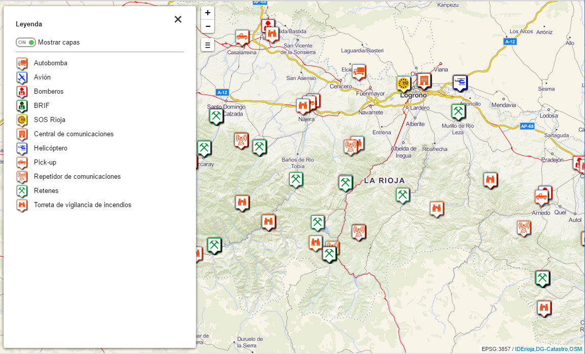

leyenda
La opción leyenda muestra un botón que permite visualizar la leyenda de las capas utilizadas en una consulta IDErioja.
El valor 1 activa la visualización del botón de leyenda. El valor 0 oculta la visualización, siendo este último el valor por defecto.
La pulsación del botón por parte del usuario, muestra u oculta la leyenda.
Una vez la leyenda está a la vista, el usuario puede mostrar/ocultar el conjunto de capas de los elementos geográficos.
Notas:
(1) Función de uso exclusivo en el ámbito de consulta IDErioja. No incorpora información proveniente de capas externas o locales, aunque estas últimas incluyan simbología.
(2) Esta opción debe ir precedida siempre por la opción consulta.
Código de ejemplo
El siguiente ejemplo ofrece un botón de leyenda que permite consultar las capas del Mapa de medios para la lucha contra incendios forestales de La Rioja (consulta=7661394c594542454f6e7339674d6a386179675444773d3d):
<!DOCTYPE html>
<html>
<head lang="es">
<meta charset="UTF-8">
<title>Ejemplo de configuración leyenda</title>
<style>
body, html{
height: 100%;
border: 0;
padding: 0;
margin: 0;
}
#map{
width: 100%;
height: 100%;
}
</style>
</head>
<body>
<div id="map"></div>
</body>
<script>
var iderioja_config = {
"consulta": "7661394c594542454f6e7339674d6a386179675444773d3d",
"leyenda": 1
}
</script>
<script src="https://apigeo.larioja.org/v1/iderioja.js"></script>
</html>
Salida gráfica
Detalle de la leyenda. (visualizar ejemplo)
